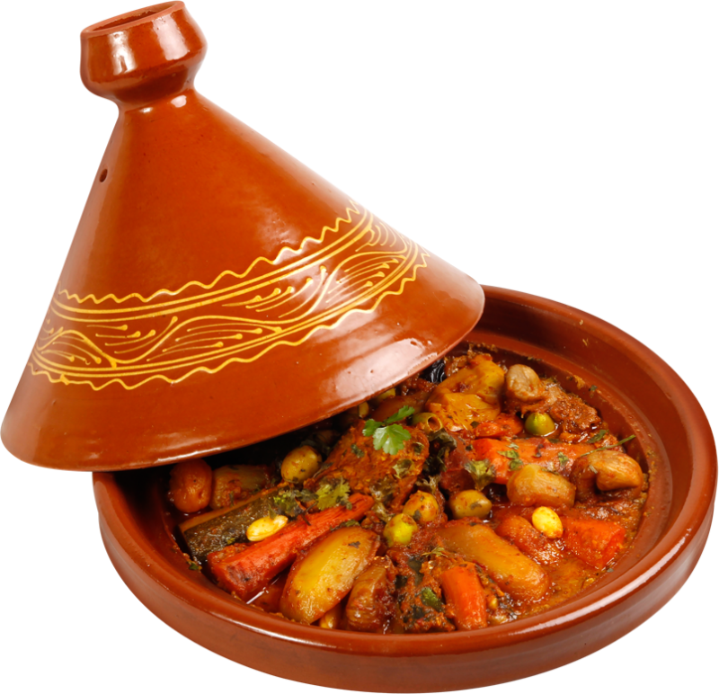

tajin

Description
Tajin is a famous moroccan dish cooked in a tajin pot. There is various types of tajin but they all share the same pot name : Tajin
A tajin consist of meat and vegetables plus local spices. The ingredients of a Tajin varies from place to place. In the next part we gonna see the ingredients of the most common Tajin.
Ingredients
Here is a list of ingredients used to prepare a Tajin :
- Meat
- Onion
- Carrot
- Potato
- Tomato
- Peas
- Zucchini
- Garlic
- Coriander
- Olive oil
- Local spices
Steps
- Put some oil in the Tajin
- Add garlic and then meat
- Cut onion into slices and add it to the Tajin
- Cut the other vegetables
into slices and add them to the Tajin
- Add the spices up the vegetable
- Cut the coriander and put it up